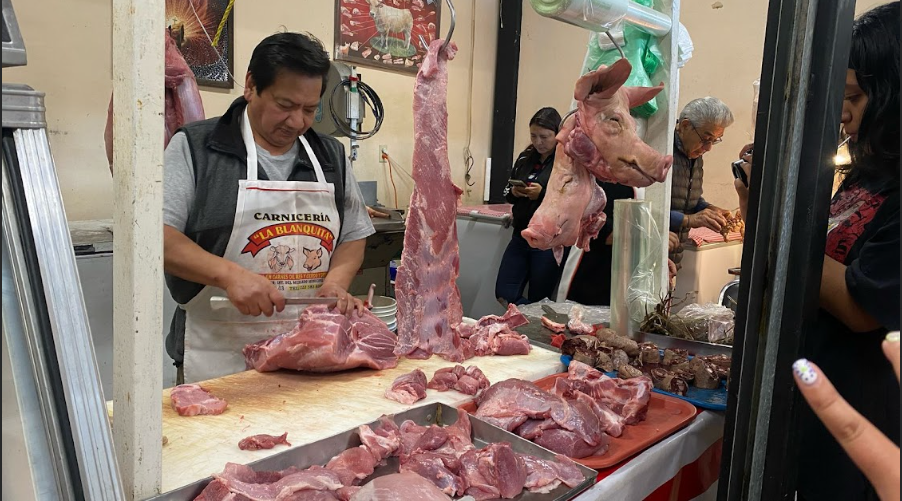
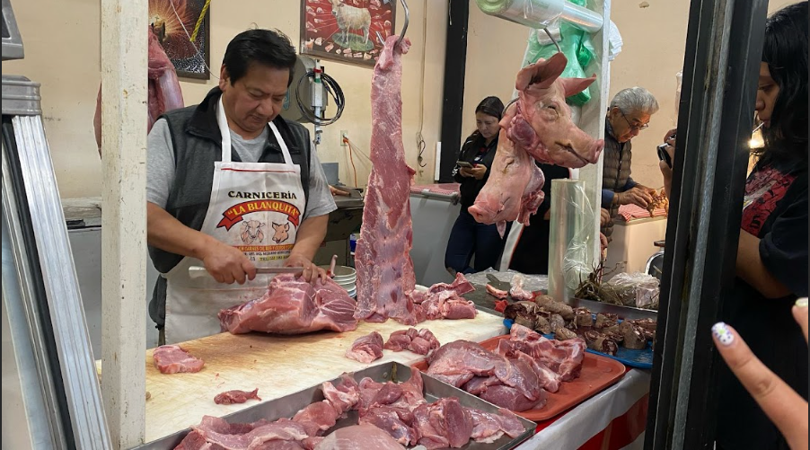

Nuestra obra expone el tema del especismo y el trato que lleva el ganado para el consumo humano.
Se busca una reflexión acerca del papel del ser humano en tanta sangre, crueldad y explotación a través de una mezcla entre la problemática y la tecnología como pieza artística interactiva.
Esta es una obra en la que se usó la documentación del ganado vacuno como pieza clave para crear una obra interactiva digital. A través de videos, fotos y sonidos se elaboró una pieza audiovisual interactiva, en donde la teatralidad también fue un punto fuerte para la obra, usando un machete (utilería) como parte de la interacción.
La obra “Su destino está en tu plato” expone el trato que llevan los animales ganaderos para que su carne llegue hasta tu plato. En promedio cada año son sacrificadas 36 millones de vidas de ganado vacuno, esto mediante el aturdimiento y posteriormente la degollación (desangrado). En esta obra interactiva se aborda la teoría del especismo según Peter Singer hablando de esta selectividad de asesinato como una injusticia y discriminación para los animales ganaderos comparándolo con el sexismo y el racismo, solo que esta vez para el consumo humano. La instalación confronta al espectador con dos realidades posibles: una, en la que el asesinato y el maltrato animal están naturalizados; y otra, donde los animales son tratados con respeto y dignidad. La experiencia propone que, a través de su participación, el espectador no solo observa, sino que encarna simbólicamente ese acto de violencia, dramatizándolo, haciéndolo presente desde la acción.
Los integrantes del equipo llevaron a cabo un exhaustivo levantamiento de información y documentación para llegar a tener una amplia idea y conocimiento de cómo es la vida y muerte de los animales. Dicha investigación y documentación conllevó:
Visitar corrales de espera, granjas, mataderos, etc: A lo largo de estas visitas, documentamos mediante foto, video y audios la vida y trato de los animales.
Observación: Para un mejor resultado tanto teórico como creativo, observamos las distintas vidas de los animales, tanto en forma presencial, como en documentales y otros medios visuales.
Revisión de documentos: La búsqueda y lectura de libros, artículos, etc. nos ayudaron a obtener un trabajo final eficaz.
Entrevistas: Cómo un último método de recolección, tenemos algunas entrevistas y pláticas con distintas personas, desde los carniceros, matanceros, los cuidadores, artistas; hasta las personas que “gozan” del producto final (carne), además de personas veganas y vegetarianos. Estas entrevistas aunque no son parte de la obra directamente, se documentaron y permanecen en la documentación.
Experimentación: Como parte de experimento y recolección de datos, los integrantes de este equipo experimentaron por tres meses, de una reducción de consumo de carne para contestar distintas interrogantes/ soluciones respecto al tema y al mismo tiempo ser coherentes al proyecto.
Las fotos y videos fueron posteriormente editadas en Ligthroom y Premiere Pro, además los audios se editaron en Audacity. El proyecto llegó a un trabajo final eficiente gracias a TouchDesigner el cual nos permitió usar la webcam y los sensores a nuestro favor, logrando una pieza interactiva digital eficiente.

 
